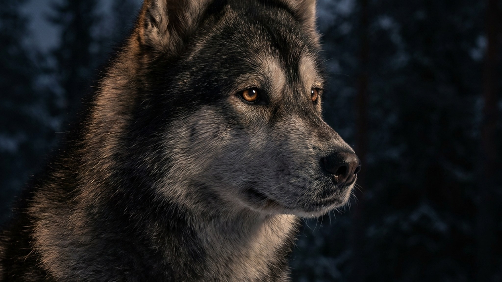

Восточносибирская лайка веками сама находила зверя в тайге за километры от человека и принимала решения без команды — это рабочее ядро никуда не делось у городского щенка. Хозяева обманываются спокойным видом взрослой собаки на участке и недодают ей нагрузки, а потом не понимают, откуда вой, подкопы под забором и побеги за кошкой. Ниже — сколько движения ей реально нужно, как уживается порода с семьёй и кому она точно не подойдёт.
🐾 Ваш питомец — восточносибирская лайка?
Заведите профиль в AnimaLife: приложение запомнит породу, возраст и вес и будет подсказывать по уходу именно для неё. Вопросы AI-ветеринару — круглосуточно и бесплатно.
Завести профиль → Завести в MAX →
У вас iPhone? AnimaLife есть в App Store
Восточносибирская лайка — крупнейшая из российских лаек, аборигенная промысловая собака огромных пространств от Прибайкалья до Якутии. Рост в холке у кобелей часто 57–64 см, сложение крепкое и выносливое, шерсть густая, с плотным подшёрстком.
Главное для понимания характера: её веками отбирали на самостоятельную охоту. Такая собака привыкла работать на расстоянии от человека и сама принимать решения — отсюда ум, независимость и сильнейший инстинкт преследования добычи.
Это порода высокой выносливости, а не диванный питомец. Прогулки «вокруг дома» на поводке ей категорически мало. В минимуме день такой лайки — это:
Недостаток нагрузки лайка компенсирует сама — грызёт, копает, воет и уходит в «самоволку». Почти всё проблемное поведение этой породы не вредность, а нерастраченная энергия.
Двойная шерсть рассчитана на сибирский мороз, поэтому в жару лайке тяжело: летом гуляйте в прохладные часы и держите доступ к воде и тени. Линяет порода обильно, дважды в год сбрасывая подшёрсток почти подчистую.
Лайка привязчива к своему человеку, но не угодлива: она партнёр, а не исполнитель. С ранней социализацией хорошо ладит с семьёй, но мелкие домашние животные для неё — потенциальная добыча, и это надо учитывать с первого дня.
Порода подойдёт активному человеку, который любит улицу в любую погоду и готов дать собаке работу. Новичку, домоседу или очень занятому человеку она дастся тяжело — от скуки страдают и собака, и дом. Вопросы здоровья и нагрузки по возрасту обсуждайте со своим ветеринаром.
🐾 У вас восточносибирская лайка?
AnimaLife соберёт уход под породу: к каким болезням есть склонность, что проверять по возрасту, чем кормить и когда пора к врачу. Бесплатно, прямо в мессенджере.
Собрать план ухода → Собрать в MAX →
У вас iPhone? AnimaLife есть в App Store
🐾 Понравился разбор?
Подпишитесь на канал — каждый день разбираем по одному тревожному симптому у кошек и собак: что в пределах нормы, а когда пора к врачу. Подпишитесь, чтобы не пропустить разбор, который может спасти здоровье вашего питомца.